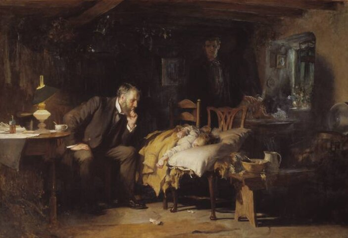

A2 · Everyday Life
At the Doctor's Office
Three short situations: booking the appointment, saying what hurts, and understanding the pharmacist.
Play the audio and follow along, then read it again on your own. Tap or hover over a highlighted word to see what it means.
Three short conversations you will need sooner or later. Your lines are written out as models.
1. Booking the appointment
Receptionist: Good morning, Dr. Reed's office.
You: Good morning. I'd like to make an appointment, please.
Receptionist: Have you been here before?
You: Yes. I came in last March.
Receptionist: Could I have your date of birth?
You: June the fourth, 1992.
Receptionist: Thank you. And what's the reason for the visit?
You: I've had a sore throat for about a week, and now it hurts to swallow.
Receptionist: I can fit you in on Thursday at ten forty-five. Does that work?
You: Thursday morning is difficult. Do you have anything later in the day?
Receptionist: There's a four-fifteen on Friday.
You: Four-fifteen on Friday is perfect. Thank you.
Receptionist: Please bring your insurance card, and try to arrive ten minutes early.
2. Saying what hurts
Dr. Reed: So, what brings you in today?
You: My throat has hurt since last week. It's worse in the morning.
Dr. Reed: Have you had a fever?
You: A little on Monday. I took something for it and it went down.
Dr. Reed: Are you allergic to any medication?
You: Not that I know of.
Dr. Reed: Let me take a look. Open your mouth, please.
Dr. Reed: It's red, but it doesn't look like an infection. You should feel better in a few days.

You: Should I take anything for it?
Dr. Reed: An over-the-counter painkiller is enough. If you still feel bad on Monday, call us.
You: And can I go to work?
Dr. Reed: You can. Drink water, and rest when you get the chance.
3. At the pharmacy
Pharmacist: Can I help you?
You: Yes — I'd like to pick up a prescription. The doctor sent it over this afternoon.
Pharmacist: Date of birth, please? … Here it is. Have you taken this one before?
You: No, never.
Pharmacist: Take one tablet twice a day, with food. Don't stop early, even if you feel better.
You: How many days is it for?
Pharmacist: Ten. There's one refill on it, so if you need more, call us instead of the doctor.
You: Thank you. Is there anything I should avoid?
Pharmacist: No alcohol while you're taking it. It says so on the label too.
Key Vocabulary
- to make an appointment to arrange a fixed time to see a doctor, dentist or official
- to fit somebody in to find a free time for somebody in a full schedule
- an insurance card the card that shows who pays for your treatment — American offices ask for it every visit
- a sore throat pain in the throat, usually from a cold
- to swallow to make food or drink go down your throat
- over-the-counter sold without a prescription, straight off the shelf
- a painkiller a medicine that reduces pain
- to pick something up to go somewhere and collect it
- a tablet a small hard piece of medicine you swallow — careful: not a computer
- a refill permission to collect the same prescription again without seeing the doctor
At the Doctor's Office — A2 · Everyday Life · Renan the Teacher, English Language Academy · https://renangrossi.github.io/englishclasses/reading/a2/at-the-doctors-office.html
Interactive Exercises
Practice
Complete each exercise, then click Submit to see your score and an explanation for every answer.
Speaking & Writing
Discussion
There are no right answers here — use these to practice speaking, or write a short answer to each.
- Role-play situation 1: one of you is the receptionist and has no free time before next week.
- How do you describe pain in your own language? Do you say "my throat hurts" or "I have pain in the throat"?
- The doctor asks three questions before looking at your throat. What are they, and why does she ask them first?
- Write a short dialogue (about eight lines) at a pharmacy where the medicine the doctor ordered is out of stock.